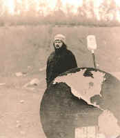

<!DOCTYPE HTML PUBLIC "-//W3C//DTD HTML 4.01 Transitional//EN"        "http://www.w3.org/TR/html4/loose.dtd">
<html lang="en">

<head>
<title>Alison Jauss:&nbsp; Late Fall with Crows - Henderson State University</title>
<meta http-equiv="Content-Language" content="en-us">
<meta http-equiv="Content-Type" content="text/html; charset=windows-1252">
<meta name="GENERATOR" content="Microsoft FrontPage 5.0">
<meta name="ProgId" content="FrontPage.Editor.Document">
<meta name="copyright" content="Copyright © 2002 Henderson State University">
<meta name="rating" content="General">
</head>

<body background="ARlogoborder.jpg" link="#006600" vlink="#006600" alink="#006600" bgcolor="#FFFFFF"><div style="background:#241b2e;color:#fff;font-family:Arial,sans-serif;font-size:13px;padding:7px 14px;text-align:center;position:relative;z-index:9999;"><a href="/books/arkansas-literary-forum" style="color:#fff;text-decoration:underline;">‚Üê Back to MarckBeggs.com</a> &nbsp;|&nbsp; <span style="opacity:.75;">Arkansas Literary Forum archive, preserved as originally published</span></div>

<div align="right">
  <table border="0" width="85%">
    <tr>
      <td width="79%" align="left">
        <blockquote>
          <p class="MsoNormal"><font color="#006600"><span style="mso-bidi-font-size: 10.0pt"><b><font size="5" face="Arial">Alison
          Jauss</font></b></span></font><span style="font-size:12.0pt"><o:p><font color="#6F0000" face="Arial">
          </font>
          </o:p>
          </span></p>
        </blockquote>
        <p class="MsoNormal"><span style="font-size:12.0pt;mso-bidi-font-size:10.0pt">&nbsp;</span><b><span style="font-size:14.0pt;mso-bidi-font-size:10.0pt">&nbsp;&nbsp;
        Late Fall with Crows&nbsp;<o:p>
        </o:p>
        </span></b></p>
        <p class="MsoNormal"><span style="font-size:12.0pt;mso-bidi-font-size:10.0pt">&nbsp;&nbsp;&nbsp;
        The yard darkened with them.<br>
        &nbsp;&nbsp;&nbsp; And emptied. They flew away,<br>
        &nbsp;&nbsp;&nbsp; sharp rush of wings.<br>
        &nbsp;&nbsp;&nbsp; Rough cries.<br>
        &nbsp;&nbsp;&nbsp; Listening to that tense breeze<br>
        &nbsp;&nbsp;&nbsp; I felt a flinch in my heart.<br>
        &nbsp;&nbsp;&nbsp; They were fat on roadkill,<br>
        &nbsp;&nbsp;&nbsp; feathers moussed down<br>
        &nbsp;&nbsp;&nbsp; blue-black as polished boots.<br>
        &nbsp;&nbsp;&nbsp; They scuttled in the dead leaves<br>
        &nbsp;&nbsp;&nbsp; and argued, and spoke</span><span style="font-family:&quot;Times New Roman&quot;; mso-char-type:symbol; mso-symbol-font-family:Symbol; font-size:12.0pt; mso-bidi-font-size:10.0pt; mso-ascii-font-family:Times New Roman; mso-hansi-font-family:Times New Roman">ó</span><span style="font-size:12.0pt;mso-bidi-font-size:10.0pt"><br>
        &nbsp;&nbsp;&nbsp; a sound between chortle<br>
        &nbsp;&nbsp;&nbsp; and song, heckle and cry.<br>
        &nbsp;&nbsp;&nbsp; A sour sermon. They walked priestly<br>
        &nbsp;&nbsp;&nbsp; on the edge of the gutter.<br>
        &nbsp;&nbsp;&nbsp; They took turns combing one another,<br>
        &nbsp;&nbsp;&nbsp; sifting through lifted feathers.<br>
        &nbsp;&nbsp;&nbsp; They napped in trees, blackening<br>
        &nbsp;&nbsp;&nbsp; the whitest bark.<br>
        &nbsp;&nbsp;&nbsp; But in stories they sat<br>
        &nbsp;&nbsp;&nbsp; on the shoulders of one-eyed bandits<br>
        &nbsp;&nbsp;&nbsp; who raped and stole.<br>
        &nbsp;&nbsp;&nbsp; They carried evil letters,<br>
        &nbsp;&nbsp;&nbsp; crying mice to boil in stew.<br>
        &nbsp;&nbsp;&nbsp; I dreamed one night<br>
        &nbsp;&nbsp;&nbsp; they poked at the door<br>
        &nbsp;&nbsp;&nbsp; as though to leave<br>
        &nbsp;&nbsp;&nbsp; a curse there<span style="font-family:&quot;Times New Roman&quot;">ó</span>the
        ping<br>
        &nbsp;&nbsp;&nbsp; and soot of a black nail. It was a cold night,<br>
        &nbsp;&nbsp;&nbsp; dead leaves sat up<br>
        &nbsp;&nbsp;&nbsp; tinny with ice.<br>
        &nbsp;&nbsp;&nbsp; When the sleet came scraping<br>
        &nbsp;&nbsp;&nbsp; like an unfed witch at our house<br>
        &nbsp;&nbsp;&nbsp; I felt a pinch in my heart.<br>
        &nbsp;&nbsp;&nbsp; I heard the crows bristle,<br>
        &nbsp;&nbsp;&nbsp; and their wings like stiff paper<br>
        &nbsp;&nbsp;&nbsp; crackling as they flew away.<o:p>
        </o:p>
        </span></p>
        <p>&nbsp;</td>
      <td width="21%" valign="top" align="center"><a href="images/porterfield2.jpg">
      <br>
        </a><font size="2">J. Porterfield</font></td>
    </tr>
  </table>
</div>
<p align="center"><a title="Select to go to the Home Page" href="2000.html">HOME</a></p>

</body>

</html>